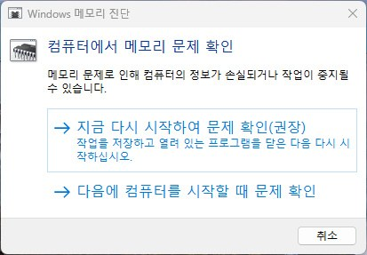
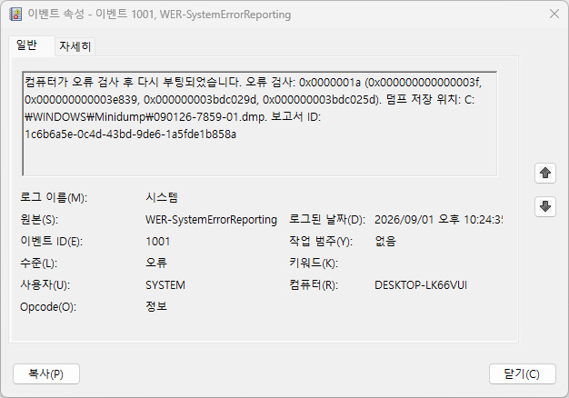
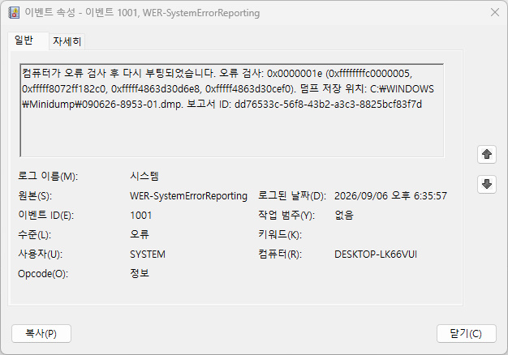
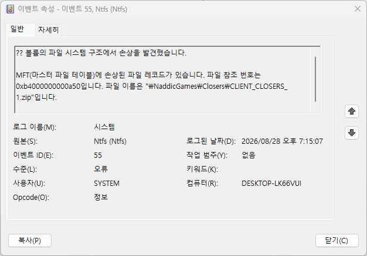

FREE MEMORY DIAGNOSTICS
블루스크린·게임 종료가 반복되면 RAM 오류부터 구분하세요
오류가 한 번이라도 나오면 정상으로 보지 않습니다. 먼저 Windows 기본 검사를 하고, 반복되거나 블루스크린이 있다면 무료 MemTest86+ USB 검사로 확인하세요.
실행 중인 작업을 저장하세요. 메모리 검사는 재부팅되며, 오류가 발견되면 사진을 찍거나 결과를 기록한 뒤 중요한 파일부터 백업합니다.
1. 가장 쉬운 방법: Windows 메모리 진단
- Windows 키 + R을 누르고
mdsched.exe를 입력합니다.
- 지금 다시 시작하여 문제 확인을 선택합니다.
- 검사가 끝나고 Windows에 로그인한 뒤 알림 결과를 확인합니다. 알림이 없으면 이벤트 뷰어에서 MemoryDiagnostics-Results를 검색합니다.
오류 없음은 기본 검사에서 문제를 찾지 못했다는 뜻입니다. 게임 중 재부팅·WHEA·블루스크린이 계속되면 다음 USB 검사를 진행하세요.
2. 더 확실하게: 무료 MemTest86+ USB 검사
- 공식 사이트에서 Windows USB Installer를 내려받고, 비어 있는 USB 메모리를 준비합니다. USB 안의 파일은 지워질 수 있습니다.
- 설치 프로그램으로 부팅 USB를 만든 뒤 PC를 재시작합니다.
- 부팅 메뉴에서 USB를 선택합니다. 보통 전원을 켠 직후 F12, F11, Esc 중 제조사 안내 키를 누릅니다.
- 검사가 시작되면 최소 한 번의 전체 통과를 기다립니다. 오류가 한 줄이라도 표시되면 사진을 남깁니다.
결과 해석과 다음 조치
- 오류 0개: RAM만의 문제로 단정할 수는 없습니다. XMP/EXPO·오버클럭을 기본값으로 되돌리고 드라이버·저장장치도 함께 점검합니다.
- 오류 1개 이상: 메모리 또는 슬롯·설정 문제 가능성이 큽니다. 전원을 끈 뒤 RAM을 한 개씩 검사해 어느 모듈에서 재현되는지 확인합니다.
- 검사 중 멈춤·재부팅: 메모리 불안정, 과열, 전원 문제일 수 있습니다. XMP/EXPO를 끄고 기본 속도에서 다시 검사합니다.
실제 사례
한 달 새 12가지 서로 다른 블루스크린 코드 — RAM 불량으로 확인된 사례
한 PC에서 약 한 달 사이 블루스크린이 16차례 발생했는데, 매번 코드가 달랐습니다 — 0x1A(MEMORY_MANAGEMENT), 0x1E(KMODE_EXCEPTION_NOT_HANDLED)가 2회, 0x3B(SYSTEM_SERVICE_EXCEPTION), 0x4E(PFN_LIST_CORRUPT), 0x50(PAGE_FAULT_IN_NONPAGED_AREA), 0x7F가 4회, 0xA(IRQL_NOT_LESS_OR_EQUAL)가 2회, 0xD1, 0xF7, 0xFC, 0x133(DPC_WATCHDOG_VIOLATION) 등 12가지 코드였습니다. 특정 드라이버 하나가 반복되는 게 아니라 매번 다른 코드가 나온다는 점 자체가 단서였습니다.
  
포인트: 매번 다른 블루스크린 코드가 반복된다면 특정 드라이버보다 메모리(RAM) 자체를 먼저 의심하세요. 일반 non-ECC RAM은 손상이 나도 WHEA-Logger에는 기록되지 않는 경우가 많고, 대신 디스크에 기록하던 데이터가 함께 깨지면서 NTFS 손상 이벤트가 대량으로 쌓이는 경우가 흔합니다. 디스크 문제로 오인해 SSD부터 교체하기 전에, 코드가 매번 달라지는 패턴인지부터 확인하세요.
무료로 함께 쓰기 좋은 프로그램
HWiNFO Free로 메모리 클럭·온도·센서를 확인할 수 있습니다. 자동 드라이버 업데이트·레지스트리 정리 프로그램은 RAM 불량을 판별하지 못하므로 사용하지 마세요.